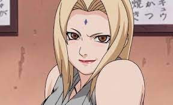
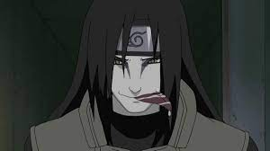
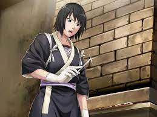

Sensesi, lejedario sannin uno de los ninjas mas fuertes, mestro de naruto quien le enseño todo lo que sabe y muere asesinado por su alumno quien el queria mucho.

Lejendaria sannin , actualmente hokage quien jitaiya esta enamorado y fue una de las que mas lamento la muerte de Jiraiya por no poder decirle lo que sentia.

Ultimo lejendario sannin que se fugo de la aldea luego de robar un sello prohibido de usar y termino siendo quien queria matar a 3 hokage y atacar a la alade de la hoja.

Shizune asistente de la hokage Tsunade quien estuvo con ella desde hace muchisimo tiempo y son inseparables.